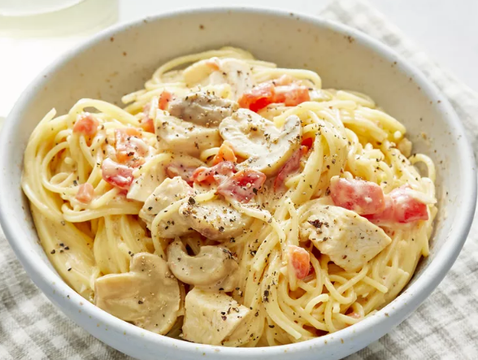

Quick and Easy Chicken Spagetti

Quicky, easy, and good. In Texas, I was taught to also add a can of Cream of Mushroom to the recipe.
I also learned that
Velveeta is the favorite to use since it melts so well.
Some people drain the Rotel, and some don't. (It's spicier if you keep the liquid though). Either way is good to me.
I know a few people who use canned chunked chicken (like canned tuna, but chicken) to make it that much quicker to make.
Ingredients
- 1 (12 ounce) package angel hair pasta
- 2 cups chopped cooked chicken breast
- 1 (10.75 ounce) can condensed cream of chicken soup
- 1 (10 ounce) can diced tomatoes with green chile peppers
- ¾ (8 ounce) package processed cheese, cubed
- ½ (4 ounce) jar sliced mushrooms, drained
- salt and pepper to taste
Steps
- Bring a large pot of lightly salted water to a boil. Cook angel hair pasta in the boiling water, stirring occasionally, until tender yet firm to the bite, 4 to 5 minutes.
- Add chopped chicken, condensed soup, diced tomatoes with chile peppers, processed cheese, mushrooms, salt, and pepper.
- Cook and stir over low heat until cheese is melted and mixture is heated through, about 5 minutes.